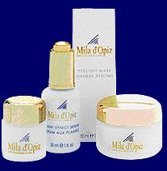
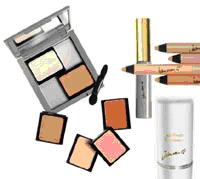
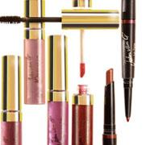
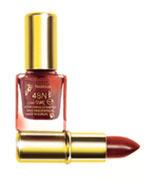

<tbody>
	<tr>
		<td valign="top" colspan="2">
			<span style="font-family: 'Graphite Light ATT'"><font size="3"><span style="font-size: 12pt; font-family: Arial"><strong><span style="font-size: 12pt; font-family: Arial"><strong><span style="font-size: 16pt; font-family: Arial">Producten en</span></strong></span></strong></span></font></span><p><span style="font-family: 'Graphite Light ATT'"><font size="3"><span style="font-size: 12pt; font-family: Arial"><font size="3"><span><strong>Mila d’Opiz</strong></span></font></span></font></span></p><p><span style="font-family: 'Graphite Light ATT'"><font size="3"><span style="font-size: 12pt; font-family: Arial"><font size="3"><span>Ik werk met de zeer uitgebreide en betaalbare verzorgingslijn van Mila d’Opiz.Dit is een zwitserse high-tech cosmeticalijn die beschikt over een uniek goedkeuringscertificaat van de Zwitserse overheid om ook geneesmideleln te produceren en tevens over kwaliteitscertificaat ISO 9001.Dit houdt in dat Mila d’Opiz altijd een hoogwaardig product levert! &nbsp;De producten zijn hypo-allergeen (minimale kans op overgevoelige reacties) en bevatten plantenextracten uit verse planten. De producten zijn grondig getest in samenwerking met dermatologische klinieken, dit vormt de basis voor huidvriendelijke kwaliteitsproducten.Ook erg belangrijk: De producten zijn DIERPROEFVRIJ!</span></font></span></font></span></p><p><span style="font-family: 'Graphite Light ATT'"></span><span style="font-family: 'Graphite Light ATT'"><font size="3"><span style="font-size: 12pt; font-family: Arial"><font size="3"><span><span style="color: black">Voor ieder huidtype (zelfs de meest gevoelige!) is er wel een passende productlijn, en voor ieder seizoen een juiste oppepper. Ik adviseer u hier graag over.</span></span></font><span style="color: black; font-family: Arial">&nbsp;&nbsp; </span></span></font></span></p><p><span style="font-family: 'Graphite Light ATT'"><font size="3"><span style="color: black; font-family: Arial"><span style="font-family: 'Graphite Light ATT'"></span></span></font></span></p><p style="margin: 0in 0in 0pt" class="MsoNormal">&nbsp;</p><span><p style="margin: 0cm 0cm 0pt" class="MsoNormal"><span><font size="3"><strong>John van G</strong></font></span></p><p style="margin: 0cm 0cm 0pt" class="MsoNormal">&nbsp;</p><span><font size="3">John van G is een make-up collectie met een breed assortiment en is constant bezig met nieuwe ontwikkelingen. Uniek is dat u zelf uw make-up doosje kunt indelen naar uw eigen smaak. Alle kleuren oogschaduw, blusher en compact poeder zijn als losse magneetblokjes verkrijgbaar. De make-up doosjes zijn er in verschillende formaten.Verder biedt John van G een ruime keuze in lipsticks, eyeliners, bronzing powder en diverse soorten foundation. Kortom; een complete make-up collectie, die altijd perfect bij u past!</font></span></span> <p><span style="font-family: 'Graphite Light ATT'"></span></p>
		</td>
	</tr>
</tbody>